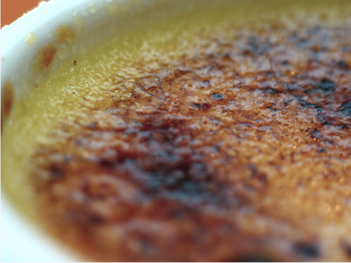

Cookbook:Crème Brûlée

INGREDIENTS
Cold Heavy Cream
Granulated Sugar
Vanila Pods
Egg yolks
STEPS
With the oven rack adjusted to its lower middle position, preheat the oven to 300°F (150°C). Fold a kitchen towel to cover the bottom of a large roasting pan and arrange 12 ea. 5-ounce (150 ml) ramekins on the towel. The ramekins should not touch each other or the side of the roasting pan. If the roasting pan is not large enough, scale down the recipe.
Combine 3 cups of the cream and sugar in a medium saucepan. With a paring knife, halve the vanilla beans lengthwise and scrape the seeds into the saucepan. Submerge the pods in the cream. Bring the mixture to a boil over medium heat, stirring occasionally to dissolve the sugar. Remove the saucepan from the heat and steep the mixture for 20 minutes to infuse the flavor.
Meanwhile, separate the eggs, placing the yolks in a large bowl and storing the whites for another use. Bring a kettle of water to a boil. After the cream has steeped remove the pods and stir in the remaining 3 cups of cream to cool the mixture.
Whisk the egg yolks until they are evenly combined. Add a cup of the cream mixture to the yolks and whisk until combined. Continue adding cups of cream and whisking until evenly colored. Pour the mixture through a fine mesh strainer into a second bowl. Ladle the mixture into the 12 ramekins.
Place the roasting pan onto the oven rack and pour in boiling water until it reaches ⅔ the height of the ramekins. Do not splash water into the ramekins. Bake until an instant-read thermometer registers 170–175°F (77–79°C) or until the edges of the custard are set, with a spot in the center about the size of a quarter remaining wiggly. The baking time depends upon the height of the ramekins. If shallow, start checking at 30 minutes. Higher ramekins can take up to an hour to bake.
Remove ramekins from roasting pan and cool to room temperature on a wire rack. Place on a shallow tray, cover with plastic wrap, and chill in the refrigerator for at least 4 hours. Before serving, uncover the ramekins and soak up any condensation with paper toweling. Spread 1 teaspoon turbinado sugar on each, tilting and tapping to spread the sugar evenly. Spread sugar only on the number of ramekins that will be served. The others can be stored for several days in the refrigerator for later use.
Ignite a propane blowtorch and caramelize the sugar on each ramekin. Take care to direct the flame away from any ignitable material. Avoid the miniature butane torch since its flame is not adequate for uniform caramelization in a reasonable amount of time, and the finished dish may taste of butane. Re-chill the ramekins for not more than 45 minutes. A longer time leads to softening of the caramelized crust.
Serve and enjoy!